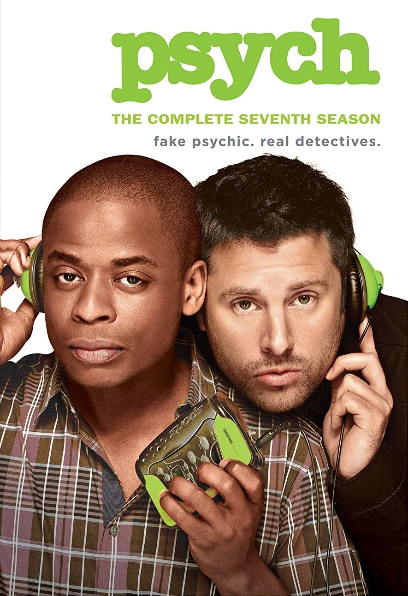
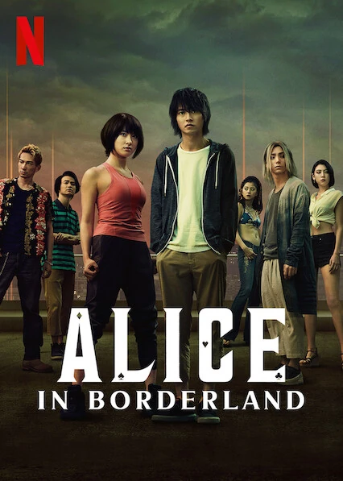

Steins;Gate

Steins Gate is an anime about time travel and alternate timelines that messes with your head on what is actually happening.

Psych TV Show is a detective show where the main character, Shawn, pretends to be psychic to solve crimes for the Santa Barbara Police Department with his childhood best friend Gus.
Steins Gate is an anime about time travel and alternate timelines that messes with your head on what is actually happening.

Alice in Borderland is an adaptation of Alice in Wonderland but it has taken a deadly turn in an apocolypic "Wonderland".

Avatar the Last Airbender is a cartoon following Aang, the Avatar who is only 12 years old after he was frozen for 100 years as he and his friends try to stop the ongoing war against the fire nation.